Maps of Raster Data
Geospatial data in a grid of cells
Types of Spatial Data
Mapping the World in 2 styles
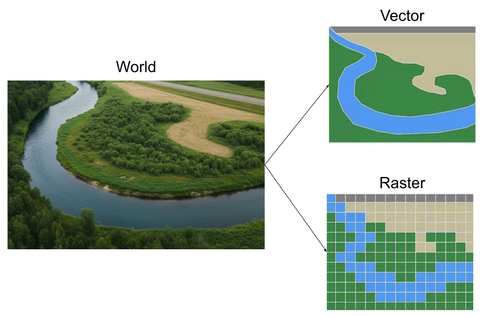
Vector Data -vs- Raster Data
Vector data are better for discretely bounded data, e.g. bike racks, rivers, political boundaries, etc.
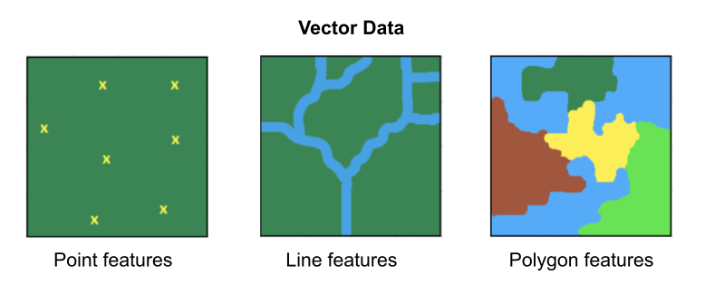
Raster data are better for continuous data, e.g. temperature, elevation, rainfall, etc.
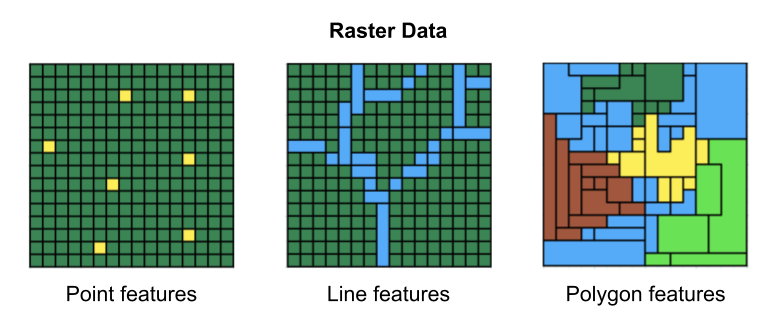
Raster Data
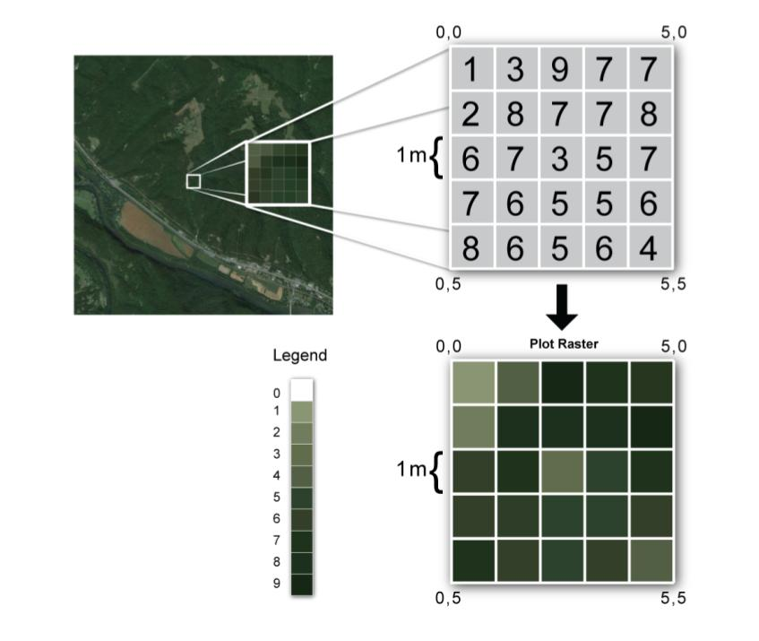
Raster Data (regular grids)
Rasters are spatial data models that define space as an array of equally sized cells, and composed of single or multiple bands.
A location is represented by a grid cell.
Cells have regular size, e.g. 30x30m.
Grid has dimension: fixed number of rows and columns.
Each cell has a value that represents the attribute of interest, e.g. temperature, elevation, precipitation, pollution, etc.
Cell values can be either positive or negative, integer, or floating point.
Raster example with NetCDF files
About NetCDF files
NetCDF: Network Common Data Form
Binary file format specifically designed for storing and sharing multidimensional data (e.g. data cube or data hypercube).
Popular format for storing scientific data, especially when dealing with gridded or multidimensional information like temperature, precipitation, or satellite imagery.
Commonly used in fields such as meteorology, climatology, and GIS to store data like temperature, precipitation, humidity, wind speed, and direction.
NetCDF of Data Cubes
Many NetCDF files are used to store data cubes or hypercubes.
3-dim cube
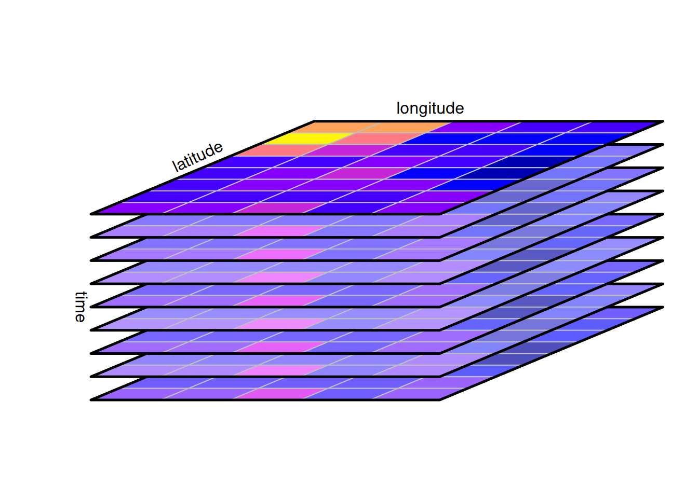
4-dim hypercube
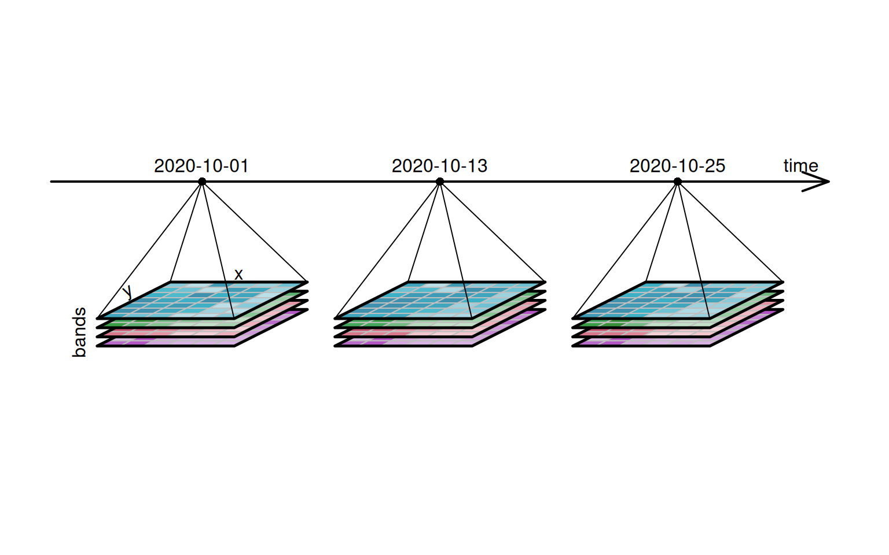
Images by Edzer Pebesma, https://r-spatial.org/python/06-Cubes.html
A 4-dim raster data cube layed out flat over two dimensions
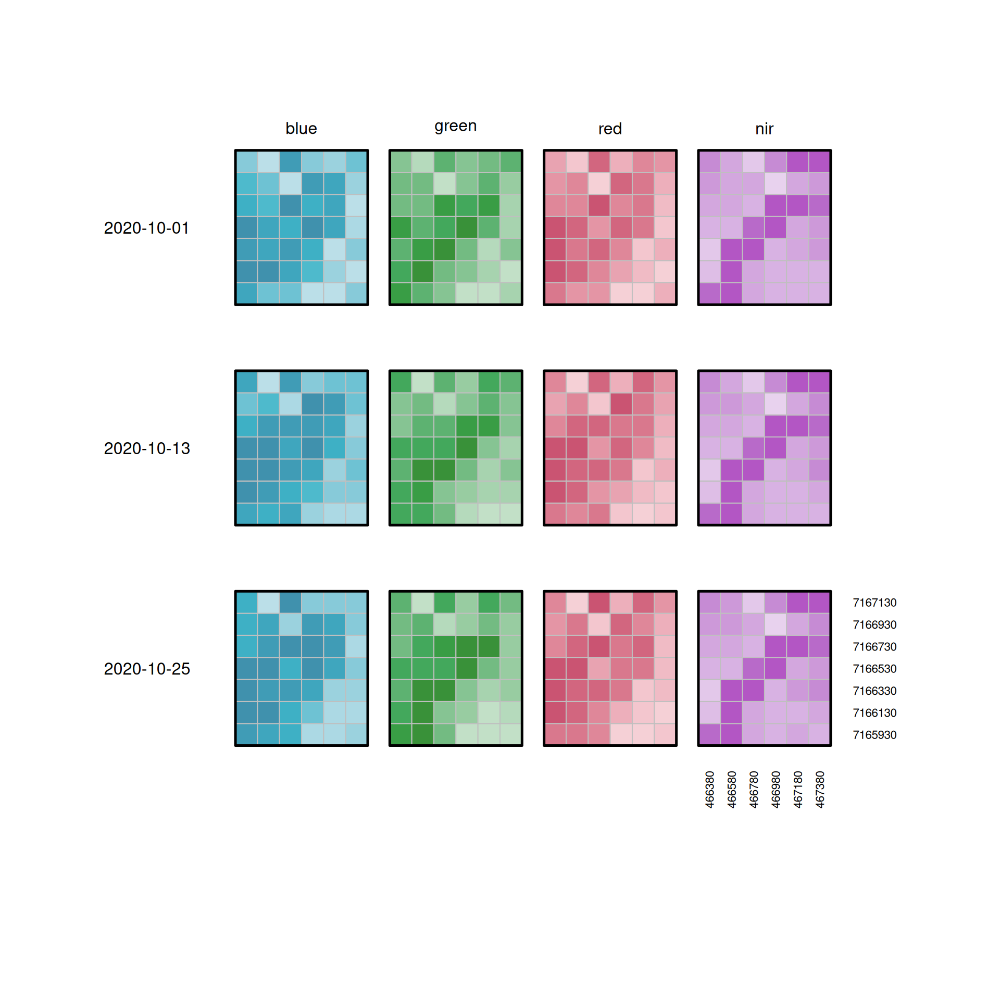
Images by Edzer Pebesma, https://r-spatial.org/python/06-Cubes.html
NetCDF Data Format
NetCDF files are self-describing, containing all the necessary information about the data, including its structure, data types, and units.
It can handle various data types, including floats, integers, and strings.
Variables in NetCDF files are associated with dimensions, allowing for organization of the data based on spatial and temporal coordinates.
NOAA Monthly U.S. Climate Gridded Dataset (NetCDF)
NetCDF Example
NOAA Monthly U.S. Climate Gridded Dataset (NClimGrid)
https://www.ncei.noaa.gov/access/metadata/landing-page/bin/iso?id=gov.noaa.ncdc:C00332
Four Climate variables:
- Maximum Temperature
- Minimum Temperature
- Average Temperature (we’ll focus on this one)
- Precipitation
Monthly average temperature NetCDF file nclimgrid_tavg.nc available at:
https://www.ncei.noaa.gov/data/nclimgrid-monthly/access/
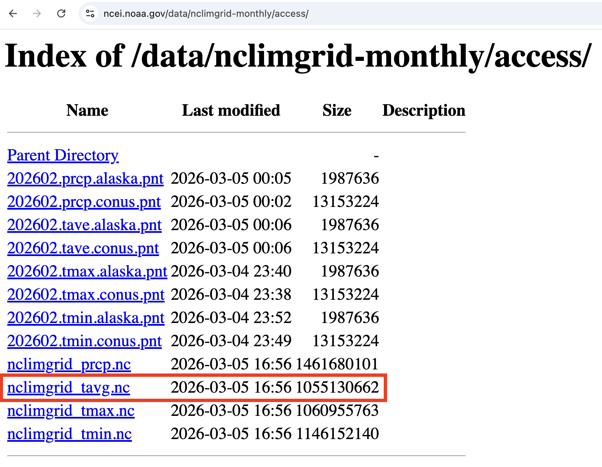
R Package "terra"
The "terra" package provides methods for spatial data analysis with vector (points, lines, polygons) and raster (grid) data.
Importing NetCDF files with rast()
Assuming you’ve downloaded "nclimgrid_tavg.nc" to your working directory
class : SpatRaster
dimensions : 596, 1385, 1574 (nrow, ncol, nlyr)
resolution : 0.04166666, 0.04166667 (x, y)
extent : -124.7083, -67, 24.5417, 49.37503 (xmin, xmax, ymin, ymax)
coord. ref. : lon/lat WGS 84 (CRS84) (OGC:CRS84)
source : nclimgrid_tavg.nc
varname : tavg (Temperature, monthly average of daily averages)
names : tavg_1, tavg_2, tavg_3, tavg_4, tavg_5, tavg_6, ...
unit : degree_Celsius, degree_Celsius, degree_Celsius, degree_Celsius, degree_Celsius, degree_Celsius, ...
time (days) : 1895-01-01 to 2026-02-01 (2 steps) Essential netCDF vocabulary
Dimension
Variables
Coordinate Variables
Dimension
A NetCDF dimension has both a name and a size.
A dimension size is an arbitrary positive integer.
A dimension can be used to represent a real physical dimension, for example, time, latitude, longitude, or height.
A dimension can also be used to index other quantities, for example, station or model run number.
It is possible to use the same dimension more than once in specifying a variable shape.
The number of dimensions is called the rank (or dimensionality).
Variables
A variable represents an array of values of the same type.
Variables are used to store the bulk of the data in a netCDF file.
A variable has a name, a data type, and a shape described by its list of dimensions specified when the variable is created.
- A scalar variable has rank 0,
- A vector has rank 1,
- A matrix has rank 2.
A variable can also have associated attributes that can be added, deleted, or changed after the variable is created.
NOAA Monthly U.S. Climate Gridded Dataset
class : SpatRaster
dimensions : 596, 1385, 1574 (nrow, ncol, nlyr)
resolution : 0.04166666, 0.04166667 (x, y)
extent : -124.7083, -67, 24.5417, 49.37503 (xmin, xmax, ymin, ymax)
coord. ref. : lon/lat WGS 84 (CRS84) (OGC:CRS84)
source : nclimgrid_tavg.nc
varname : tavg (Temperature, monthly average of daily averages)
names : tavg_1, tavg_2, tavg_3, tavg_4, tavg_5, ...
unit : degree_Celsius, degree_Celsius, degree_Celsius, degree_Celsius, degree_Celsius, ...
time (days) : 1895-01-01 to 2026-02-01 (2 steps) Dimensions:
- nrow: 596
- ncol: 1385
- nlyr: 1574
One layer per month:
- 1st layer: January 1895
- 12th layer: December 1895
- 13th layer: January 1896
- layer 120: December 1904
What is the layer number of April 2025?
01:30
Layer 1: January 1895
class : SpatRaster
dimensions : 596, 1385, 1 (nrow, ncol, nlyr)
resolution : 0.04166666, 0.04166667 (x, y)
extent : -124.7083, -67, 24.5417, 49.37503 (xmin, xmax, ymin, ymax)
coord. ref. : lon/lat WGS 84 (CRS84) (OGC:CRS84)
source : nclimgrid_tavg.nc
varname : tavg (Temperature, monthly average of daily averages)
name : tavg_1
unit : degree_Celsius
time (days) : 1895-01-01 Layer 1564: April 2025
class : SpatRaster
dimensions : 596, 1385, 1 (nrow, ncol, nlyr)
resolution : 0.04166666, 0.04166667 (x, y)
extent : -124.7083, -67, 24.5417, 49.37503 (xmin, xmax, ymin, ymax)
coord. ref. : lon/lat WGS 84 (CRS84) (OGC:CRS84)
source : nclimgrid_tavg.nc
varname : tavg (Temperature, monthly average of daily averages)
name : tavg_1564
unit : degree_Celsius
time (days) : 2025-04-01 Layer 1564: April 2025


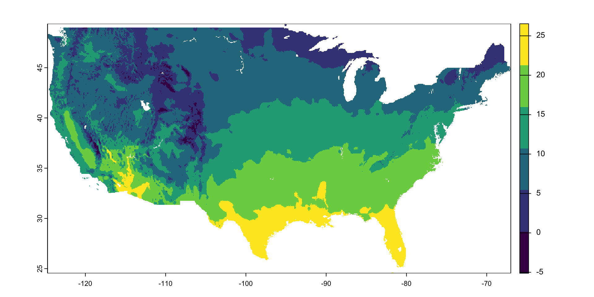
Converting temp to Fahrenheit

Raster Maps with "ggplot2"
Raster to data.frame (or tibble)
To use ggplot() first we need to convert the raster object into a table (data.frame or tibble)
x y tavg_1564
710 -95.14583 49.35420 4.730469
711 -95.10417 49.35420 4.780273
712 -95.06250 49.35420 4.799805
2095 -95.14583 49.31253 4.780273
2096 -95.10417 49.31253 4.790039
2097 -95.06250 49.31253 4.799805
Notice the argument xy = TRUE; this gives you the x (long) and y (lat) coordinates!
Warning message:
Raster pixels are placed at uneven horizontal intervals and will be shifted
ℹ Consider using `geom_tile()` instead. 
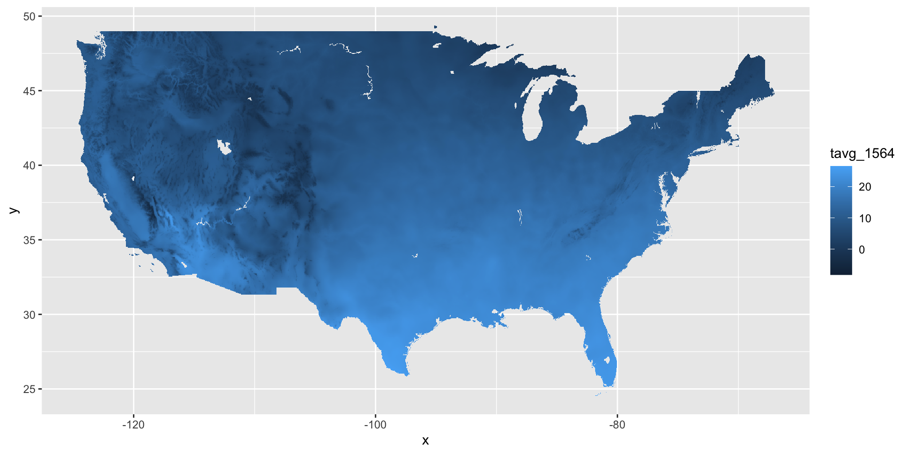
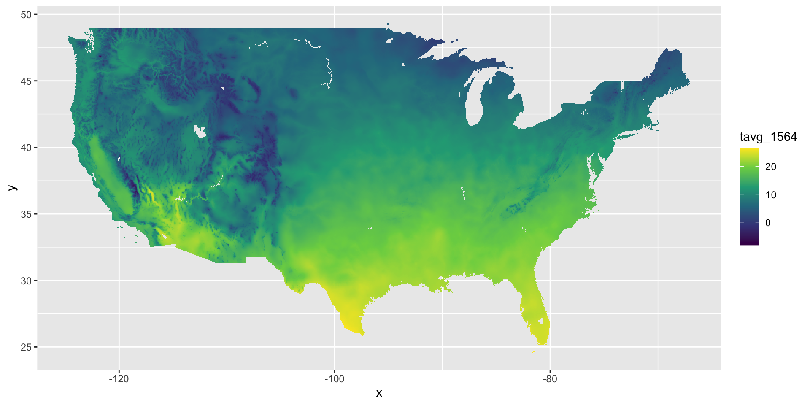
Reminder: Map of US States

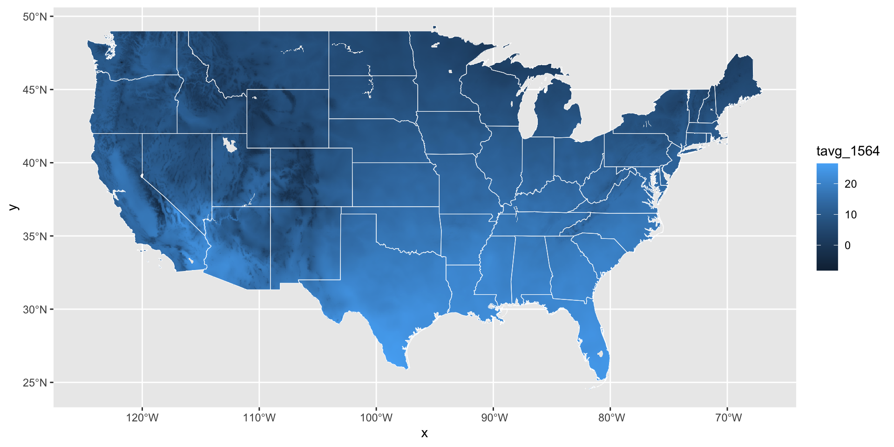
Note that geom_sf() sets fill to a fully transparent color so that only the polygon borders are shown in white.
Code
# color gradient: binned viridis (discrete)
ggplot() +
geom_tile(data = apr_2025, aes(x = x, y = y, fill = tavg_1564)) +
scale_fill_viridis_b(breaks = seq(from = -10, to = 25, by = 5)) +
geom_sf(data = us_states, fill = "#FFFFFF00", color = "white") +
coord_sf(xlim = c(-124.7083, -67), ylim = c(24.5417, 49.37503))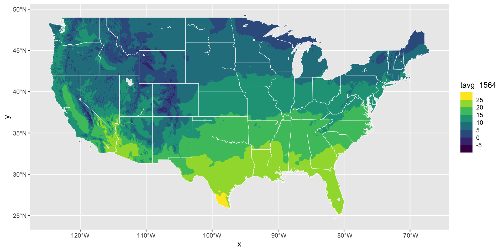
Our workflow
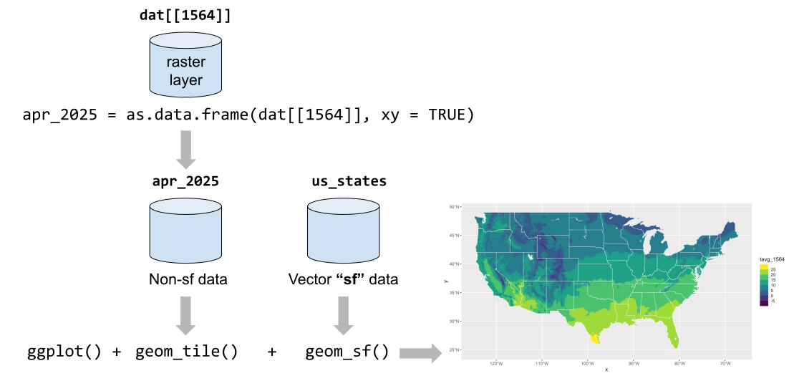